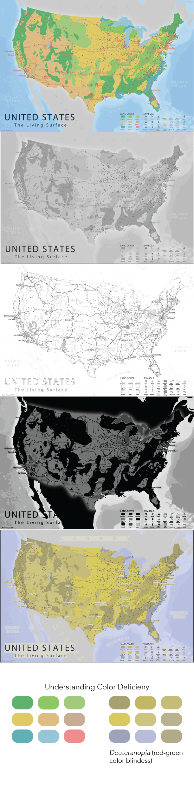
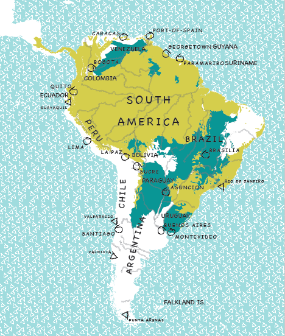
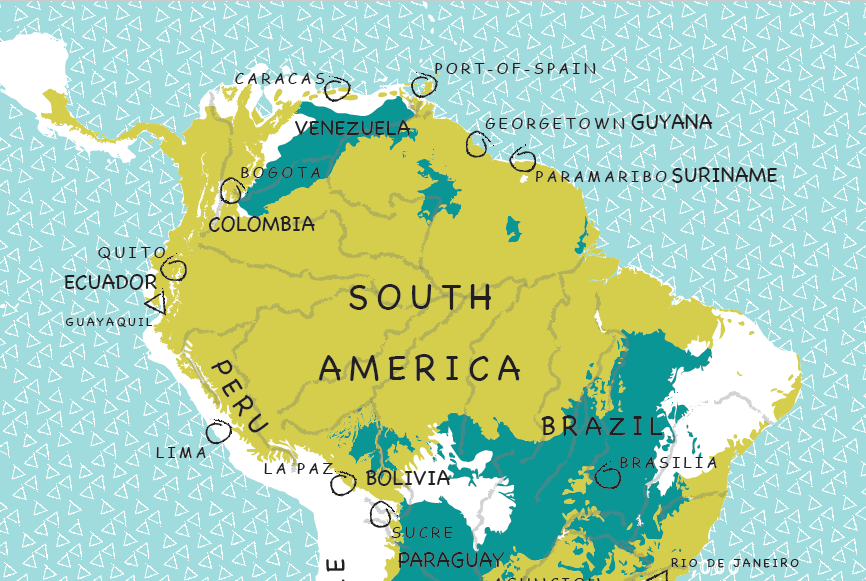

Geography 572 (G572) provides an in-depth examination of advanced themes and
topics in cartographic design. G572 is an extension of the G370 course, but with a
focus on cartographic design for the web rather than print and the intersection of
cartographic design with graphic design, web design, and the digital humanities.
Specifically, G572 integrates theory (new ways of critically examining cartography) and practice (cartographic implementation) emphasizing the design of webdelivered static maps, rather than the design of interfaces for manipulating these maps.
My current syllabus and course schedule is available here.
Inclusion and Engagement
Inclusion and engagement are key components of my teaching philosophy. As such, we embrace all students, including and
especially: people of color, LGBTQIA people, non-citizen residents (of any status) and
Native Americans, Muslims, Jews, and members of all other faiths, atheists &
agnostics, women, disabled people, and disaffected people. We will actively work to
ensure that everyone is welcome and is invited to share their perspectives. We will
respect and support one another.
I'm still working on fostering an inclusive environment. Below are my current strategies and I would love suggestions!
Classroom layout: I arrange the seats into a circle / u-shape.
Name plates: Each students has a name card on displayed on her/his/their desk.
Remembering names: I had out each name plate at the beginning of class.
Avoiding the podium: I limit my time in front of the class lecturing. I prefer to sit in the circle with my students.
Preparation: Students are asked to come prepared to class having read/viewed the assigned material. At the beginning of class, I provide prompts and have students take a few moments to write down their thoughts on the assigned readings. I hope this helps spur conversation and increase engagement with the material
Readings
Students are asked to complete a series of readings before class on Wednesdays. The readings address the topic or lens for week in a variety of ways. My goal is to combine academic articles with additional and alternative sources of knowledge. For example, I may ask students to read blog posts, tutorials, and news articles. I also aim to incorporate other multimedia sources like videos or to review existing maps.
Free Write and Discussion
As mentioned above, students are assigned reading material that directly relates to the cartographic theme of
the week. In class, they are asked to write a short reflection about the assigned
readings and theme of the week. I provide questions or prompts to get students
engaged in thinking and writing. To receive full credit, students come to class prepared having read or
watched the assigned materials. Additionally, the free writes encourage and help
guide class discussion.
Objects
In this class, students help curate course material by submitting map
examples, graphics, articles, videos, or material related to the course. I provide
prompts and ask students to submit a related object each week before class (usually Fridays).
Students submit each object online and come to
class prepared to talk about their objects!
Lecture Activities
Lecture activities take a variety of shapes, including class
discussions of readings, critiques, peer feedback, group work, and mapping
exercises. Fridays are reserved for activities and are generally held in the lab room. The goal is to learn from each other and learn from “doing”.
In mapping exercises, for example, students will put cartographic themes from assigned
readings, discussions, and my lectures to practice. Additionally, extra lab experience
benefits their cartographic skills development.
I should note that the activities mentioned above are in addition to traditional lab assignments. I also save time for a bit of lecture. I'm not going completely rogue (yet)!
Back to Top
Critically examine maps and mapping through transdisciplinary lenses by
reading, writing, and actively discussing
Translate cartographic theory into cartographic practice through process,
experimentation, critique, and feedback
Enhance your cartographic skillset through advanced cartographic techniques
and technologies
Create an online web portfolio to show off your work
Discover your cartographic self and what mapping means to you
Back to Top
Readings
"How Mapping Became Scientific" in Mapping: A Critical Introduction to Cartography and GIS, Jeremy Crampton
"The Political History of Cartography Deconstructed" in Mapping: A Critical Introduction to Cartography and GIS, Jeremy Crampton
The Hidden Histories of Maps Made By Women: Early North America, Laura Bliss, CityLab
#NoDAPL, Carl Sack
Free Write and Discussion
Free Write #1
What are your expectations for the course?
What are your career goals?
Are there any topics from Geography 370 (Intro to Cartography) that you feel unsure about and would like a review?
Is there anything I should know about you before the semester begins (i.e. accommodations, conference travel, expected absences)?
Free Write #2
What was familiar or a review about the histories presented in the readings? What was new?
What and who was missing from the readings?
To what extent, does Robinson’s scientific approach to mapping and the communication model influence cartography today?
How is cartography changing? Who’s in control of mapping?
Objects
Defining the Map
By default, maps are political and powerful objects. As a result, the very definition of a map matters. To receive full credit for this assignment, I asked students to submit to a discussion post a definition of a map. This can be in their own words or can be borrown from someone else (as long as they give recognition).
Students then used these definitions in the Lecture Activity below.
Lecture Activity
For this Lecture Activity, students were paired up to introduce and discuss their Object or map definitions. I asked them to compare similarities and difference in terminology as well as the connotations produced by each definition.
Lecture Activity Handout
I combined all Objects or map definitions into one word cloud and as a class, we narrowed down a few working definition. The goal was not prescriptive. I wanted students to think about their own perspectives and the assumptions within their experiences as cartographers.
Notes and Reflections
One of the best pieces of this class is the fact that it's an upper-level course. Everyone in class is in there for a reason. There's a mix of students from undergraduates to certificate students. They have all taken Intro to Cartography (Geog 370), but with varying teachers and varying perspectives. All in all, there is a ton of excitement! The students are ready to go!
The first day of class (Wednesday) was the typical "syllabus day". After going through course content and goals, we did a round of introductions and spent time on Free Write #1. This was a really good way to get to know students quickly without the pressure of verbal introductions.
On Friday, we jumped right into course material beginning with Free Write # 2. Class discussion on the assigned readings was a bit rough, but I think that might be a remnant of the first week of class. It's something to keep an eye on though. We then moved to the lab for this week's Lecture Activity. The best part of the Lecture Activity was the buzz of students talking and working together. Regardless of actvity's actually outcome, this was awesome to see!
Back to Top
Readings
Cartography I: Mapping Narrative Cartography, Sébastien Caquard
Framing the Days: Place and Narrative in Cartography, Margaret Pearce
A Rogue State Along Two Rivers, New York Times
An Infamous Day, Esri Story Maps
Hurricane Harvey Post Event Imagery, Esri Disaster Response Program
Free Write and Discussion
Free Write #3
How are maps and stories related?
Caquard differentiates grid maps and story maps. How are they similar or different?
What are your thoughts on the assigned maps from Pearce, The New York Times, and ESRI Story Maps? Do they tell stories?
What narrative mapping techniques did Pearce use?
Objects
Story or Narrative Map
Maps have a long and interconnected history with stories and narrative. Most recently, however, story maps, visual storytelling, and narrative have become buzz words in cartography and data journalism (among many other fields). For this Object assignment, I asked students to upload one of their favorite story maps, narrative maps, or any map incorporated into a story.
Students then used these map examples in the Lecture Activity below.
Lecture Activity
Lecture Activity Handout
Lecture Activity Worksheet
Lecture Activity Worksheet Example
Notes and Reflections
I really had fun this week in class because my work has always been inspired by the inclusion of stories and narratives in cartography. I'm particularly inspired by Sébastien Caquard and Margaret Pearce's (my former advisor at the University of Kansas) work. Discussion with students this week was easy. Stories and narrative are buzz words in contemporary cartography and whether or not they read the material, they had plenty to say. Students also seemed very interested in the story-esque maps that I provided as assigned readings. We explored the similarites and differences in narrative and storytelling techniques across the examples. We then dove more closely into Margaret Pearce's techniques in Framing the Days.
One pedagogical question arose this week, "what is the role of required reading?" I don't have any exams, but I do have short quizzes on all readings, discussion, and lecture material. The only way I really gauge their reading, however, is through Free Writes and discussion in class. I try to avoid completely regurgitating the readings in my lecture. In some ways, students just "miss out" on related material if they haven't read.
Furthermore, I try to provide at least two Free Write prompts that are directly related to the assigned readings and two that are more open ended. This allows those who didn't read to participate and engage in thought, in writing, and in conversation. I personally think the readings supplement and add to the discussion in numerous ways, but I'm definitely bias given my interest in the material. I hope to provide relevant and interesting readings from various outlets (not just academic articles, but blogs, maps, news articles, tutorials, videos, etc.) I know others who do not have any assigned readings. I know other who don't assign any readings or text. Long story short, should I care if students complete the readings?
The Object assignment and Lecture Activity this week asked students to submit their favorite story or narrative map examples. We then explored and documented specific storytelling and cartographic techniques that were used in the map examples. Students worked in groups of two or three, which I highly suggest. Students jumped right into the Lecture Activity and were able to talk through the map examples together. Also, this cuts grading in half, which is a major win for me! I plan on creating a composite list of the techniques, so stay tuned!
In other news, I've discovered that I trip on nearly everything when I teach. The comedic relief comes in handy.
Back to Top
Readings
So What?, Cole Nussbaumer Knaflic from Storytelling with Data
2014 The Year in Interactive Storytelling, Graphics and Multimedia, New York Times
WTF Visualizations, @WTFViz
Storied Maps, Mark Denil
Free Write and Discussion
Free Write #4
Objects
Bivariate and Multivariate Maps
In addition to visual storytelling and data journalism, we explored bivariate and multivariate maps. I asked students to submit bivariate and multivariate map examples as their Object for this week. After completing the lecture activity below, we discussed strategies for successful map design using two or more datasets. Drawing on Marty Elmer's master's thesis, we discussed separable, integral, configural, and assymetrical bivariate map types and when to use them!
Keeping the theme of this week in mind, the goal is to effectively and efficiently tell a multidimensional story with data.
Lecture Activity
This week's lecture activity was inspired by Storytelling with Data.
Lecture Activity Handout
Data Example for Adobe Illustrator
Outcome Example
Notes and Reflections
Still reflecting...
Back to Top

This is an outcome from the Lecture Activity. More info on this map and cartographer (Robert Darlington) can be found here.
Readings
"An Information-Processing View of Visiona and Visual Cognition" in How Maps Work: Representation, Visualization, and Design, Alan MacEachren
"How Maps are Seen" in How Maps Work: Representation, Visualization, and Design, Alan MacEachren
"Color Design for the Color Vision Impaired" in Cartographic Perspectives, Bernhard Jenny and Nathaniel Vaughn Kelso
Free Write and Discussion
Free Write #5
This week's Free Write focused on the first lab assignment. Students are creating a longform infographic and are asked to utilized visual storytelling techniques to effectively convey a narrative. They are asked to include a bivariate map. As such, we used this Free Write as a "check in". This helps the students solidify their topic and data sources. Additionally, this allows us (the TA and I) to better understand individual progress as well as any issues that have arisen.
What is the central argument or storyline in your Lab 1?
What two datasets are you using for your bivariate/multivariate map?
Are your datasets separable, integral, configural, or assymetical?
Which bivariate map combination makes sense for your data?
What software program are you in (ArcMap or Illustrator) and what are your next steps?
Objects
Personal Map that Could Use Perceptual Enhancement
This week, I asked students to submit their final project (or another map) from Geography 370, our intro to cartography course at UW–Madison. Students used this map Object in the lecture activity on Friday. I have found that revisiting and critically examining maps that I've created in the past is extremely helpful. After you get over the "what in the world was I thinking", this can be really productive. Taking a break and returning to past work is refreshing because when you're deep in the work itself, it's hard look beyond the page. Additionally, I want students to get in the practice of revisions. At the end of the semester, they will put together online portfolios. By digging up their old projects, I hope they edit and post them online as something to be proud of.
Lecture Activity
Lecture Activity Handout
Outcome Example
Color Oracle
This lecture activity could be split into two. I was hoping students would have enough time to actually edit their map, but we ran out of time. Instead of editing the map, I had students reflect on potential strategies for future edits.
Notes and Reflections
This week was really fun! I planned this week's Lecture Activity early this summer after listening to Daniel Huffman's ICC presentation on the Ecological Atlas of the Bering, Chukchi, and Beaufort Seas. If you haven't seen the atlas yet, you should really check it out. It's absolutely stunning. During his talk on cartographic design for marine maps, Daniel focused heavily on universal and effective design for the color impaired. Daniel views such design as an ethical requirement that emphasizes inclusion. Roughly eight percent of the population is effected by some type of color deficiency and as visual designers, this is something that needs to be taken into account. And to be honest, this is something I haven't always prioritized. As such, I built a portion of the Lecture Activity around design principles for color impairment.
I should probably back up a bit though. Our lens or theme for the week was perception and to be honest (again), this lecture was a lot to take in when I took the class. When I took the course, one of the primary text's was Alan MacEachren's How Maps Work. How Maps Work is a fantastic and comprehensive text that interrogates how maps are seen, how they are understood, and how they create meaning. It is also extremely rich, yet dense and for me, it was difficult to digest in large chunks. As such, I had students review the text and after our Free Write, I lectured for a good portion of the class. This isn't something I want to do very often, but I wanted to outline key points and take aways from the text. We defined perception and explored vision, the eye, eye-brain physiology, visual stimuli, and Marr's theory of vision. We linked Marr's theory of visions (a series of abstractions of the visual scene) to cartographic principles such as contrast, grouping, and figure/ground. We are going to wrap up our notes on gestalt principles and grouping this week.
This week took more prep than normal for me. I found that I was a little uneasy with the topic and doubted my ability to explain these concepts effectively. After rereading How Maps Work and Rob Roth's lecture, I turned to good old YouTube. I watched a series of lectures from psychology 101 courses and physiological descriptions of the eye and image processing. All in all, I think it went fine and it was actually fun. Going back through this material really helped ingrain why perception is so important. Of course vision can be deceptive and perhaps limiting if we look at it in isolation, but incorporating a perceptual lens in our cartographic work can be really useful! It might take a few reviews to let it sink it though.
Students also played around with color vision impairment filters in Photoshop and Illustrator this week in the Lecture Activity. I also finally downloaded Color Oracle. You should definitely check this one out! Thanks for checking in!
Back to Top
Readings
Students did not have assigned readings for Wednesday because they had a quiz. After the quiz, I jumped into lecture notes instead of discussion.
Free Write and Discussion
No Free Write this Week
We had our first open note quiz this week in lieu of a Free Write. The quiz covered all lecture material, readings, discussions, and lecture activities completed. I'm happy to send my quiz to any interested instructors! Send me an email or message me on Twitter!
Objects
Favorite Terrain Map
I asked students to submit their favorite terrain map for this week's Object. Students used these maps in the Lecture Activity on Friday. In Lab, they are designing their first terrain map, so I wanted them to be exposed to high quality and unique terrain examples. The discussion thread turned into an effective inspiration board! I will posted a few examples asap.
Lecture Activity
Breaking Down and Building Up Terrain!
Lecture Activity Handout
Lecture Activity Worksheet
Notes and Reflections
This week was a little crazy for a number of reasons. Students completed an open note quiz on Wednesday and they had their first lab (a longform infographic that includes a bivariate map) due. As mentioned, the quiz was open note and covered anything and everything from the first five weeks of class. It was worth 10 points and included multiple choice, true/false, matching, definitions, and short essays. Overall, I thought the quiz was pretty fair, but the grades were lower than I expected. There were several students that did really great, a few in the middle, and a few on the lower end. My goal was for students to review their own notes and my lectures notes which are posted online hoping the material would sink in and stay. I framed the quiz as 'free points' because it relied on notes and attendance. Are open note quizzes really 'free points'? Furthermore, are open note quizzes useful for reviewing past materials if students don't take it seriously? Am I overthinking it because I want everyone to do well? Everyone will do better next time with one under their belt, right?
This week I introduced visual complexity as it relates to visual perception. Visual complexity, information density, and visual overload all directly effect perceptual understanding of the map. We discussed a variety of factors that influence visual overload. Bivariate maps, for example, increase the complexity of the page by asking viewers to digest more than one variable simultaneously. Additionally, the number of features on the map impact map comprehension. We examined visual complexity in thematic maps and infographics that seek to remove all extraneous information. In contrast, reference maps, particularly those that include terrain, seek infomation density and in turn, increase visual complexity.
On Friday during our Lecture Activity, we dove into terrain mapping technqiues. Terrain provides increasing realism and hyperrealism and allows viewers to connect with/recognize the landscape. Let's be real though. Terrain is sexy. Viewers (and cartographers) really like terrain, but it's also reallydifficult to create clear visual hierarchy and figure/ground. To help students plan ahead for their second lab, a terrain reference map, students explored the intellectual and visual hierarchies depicted in the terrain maps submitted as Objects. They then created their own symbol/type specification sheet (spec sheet) to help guide their own design. I found this Lecture Activity to be really helpful. Some students took it more seriouesly than others. For many, this was their first time looking at a map layer by layer to better understand the visual hierarchy at play. I hope this activity directly informs their upcoming lab.
This week was also busy because I was preparing for NACIS and trying to get ahead for the class. I am super fornuate though because I have a great TA that ran the show while I was gone. I was able to get some grading down while gone, answer a few emails, and now I'm stuck in Toronto updating this website! Stay tuned for a NACIS recap. As usual, I'm extremely exhaustive after the conference and workshops, but I learned a ton! I look forward to incorpoatomg new tools and techniques into the class!
Back to Top
This week I was at NACIS or the North American Cartographic Information society meeting in Montréal, Canada. NACIS is an incredible community of academic and industry cartographers. I cancelled my lectures (lab was still held) and spent the week learning from amazing cartographers and their inspiring work. I participated in Practical Cartography Day on Tuesday, which consists of short demo/tutorial presentations as well as the main conference. I gave a presentation called Humanzing Maps with my colleagues Nick Lally and advisor, Rob Roth. I wrapped up the week with some poutine and a Critical GIS workshop at McGill University. All in all, it was a great week.
Below is a list of some of my favorite presentations, super interesting new tools, and some resources that might be helpful in future course development.
Tools and Libraries
I've used MapShaper in class and in my own cartographic work as my primary mode of generalizing line work. MapShaper provided a visual means to simplify line work on the fly. The tool was built by Matthew Bloch, a UW–Madison alum currently at the New York Times. Bloch reintroduced the tool as well as a series of command line upgrades that allow the user to perform a variety of map and analysis tasks, including: clip, join, simplify, dissolve, style, etc. Bloch provided example data here. In the command line window, use tips and help to get started!
Have you ever wanted to remove all of your clipping masks at once? Or wanted to justify your text without shifting the text left or right? This library of hot keys is for you! Seriouesly, check this one out. The crowd at PDC gasped in awe. Jamie Robertson from Adventure Cycling Association curated the library and gave a demo at Practical Cartography Day.
Educational Resources
Alex Tait presented his portion of the Body of Knowledge Project. Alex is well known in cartographic industry and returned to the books to revisit and reorganize mapping concepts around visual hierarchy, map elements, and layout. Be sure to check out the map graphics he includes and stay tuned for more here.
Daniel Huffman presented Sharing Knowledge in Small Bites at NACIS and asked the cartographic community to think of small ways to share knowledge. Everyone has something to share and short 140 character tips, tricks, and demos are super manageble. Check out the hash tag #Practicarto for the wealth of knowledge and don't forget to contribute yourself!
Back to Top



This is an outcome tbat I put together during the Lecture Activity. The inspiration piece (the first image) was created Dallas Clayton.

{kind=link}
{kind=link}
{kind=link}
{kind=link}
{kind=link}